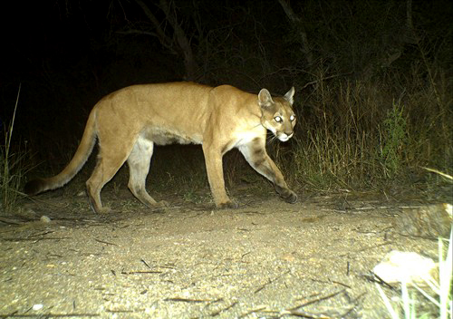

📋 Resumen del caso
- Fecha:jueves, 14 de mayo de 2026
- Ubicación:Cachoeira do Cordovil — Santuario Volta da Serra, Alto Paraíso de Goiás (a 9 km de São Jorge, a 29 km de Alto Paraíso)
- Víctima principal:Niña de 8 años: lesiones faciales, cirugía plástica en Hran (Brasilia), condición estable
- También heridos:La madre de la niña - se rascó el brazo al defender a su hija, recibió la vacuna contra la rabia
- Animal:Puma (puma) — estaba en el suelo cerca de la vegetación, huyó al bosque después de ser asustado
- Medida inmediata:Santuario suspendió visitas para revisar protocolos de seguridad
🌿¿Qué pasó realmente?
La familia había ido a la Chapada dos Veadeiros para celebrar el cumpleaños de la niña, que se celebró el miércoles 13 de mayo. Fueron a Cachoeira do Cordovil para celebrar la fecha. Al regresar de la cascada, el puma vio al grupo.
Contrariamente a lo informado inicialmente, el puma no se encontraba encima de un árbol en el momento del ataque: el animal estaba en el suelo, cerca de la vegetación. Asustado, el felino huyó hacia el bosque tras ser ahuyentado por los adultos. El padre de la niña y un empleado del santuario se enfrentaron directamente al puma para detener el ataque; el empleado incluso usó como escudo su propia mochila, que se llevó el animal durante su fuga.

El niño fue atendido inicialmente en el Hospital Municipal de Alto Paraíso. Dada la complejidad del caso, fue trasladada al Hospital de Base do Distrito Federal (HBDF) y luego al Hran, referente en cirugía plástica en el DF. La cirugía duró toda la mañana del viernes, sin complicaciones. La evaluación indicó lesiones superficiales, sin pérdida ósea.
La madre también resultó herida: cuando se arrojó delante de su hija para ahuyentar al animal, recibió un rasguño en el brazo y fue vacunada contra la rabia.
🐾Comportamiento del puma: por qué este caso es raro
El puma —también llamado puma o puma— tiene hábitos discretos y solitarios, y evita naturalmente el contacto con las personas. La guía Janna, con más de 10 años de actividad en la naturaleza de la región, declaró que nunca había visto uno en los senderos durante sus expediciones.
"Yo mismo, en más de 10 años de actividades en la naturaleza en Chapada dos Veadeiros, nunca he visto un puma en los senderos. Ataques como este son extremadamente raros".
— Janna, guía turística de la Chapada dos Veadeiros
El biólogo y máster en Ecología Vítor Sena refuerza la excepcionalidad del caso y pide equilibrio en la reacción pública:
"Los ataques son extremadamente raros y generalmente ocurren debido a acercamientos inesperados, reacciones defensivas o la presencia de cachorros. Es importante cuidar a la víctima, pero evitar villanizar al animal; esto está completamente fuera del comportamiento esperado de la especie".
— Vitor Sena, biólogo y máster en Ecología
Según los expertos, el aumento de avistamientos en zonas turísticas se debe a la expansión urbana y a la fragmentación del hábitat del cerrado. No es que el animal "invadió" la ciudad: somos nosotros los que ocupamos zonas cada vez más cercanas a los hábitats naturales. En la mayoría de los casos, al notar la presencia humana, el puma simplemente se retira y se va.
🛡️Qué hacer si te encuentras con un puma en el camino
Luego del incidente, guías turísticos y posadores de Chapada dos Veadeiros publicaron protocolos de seguridad. Las directrices son unánimes:
Mantenga la calma
No entrar en pánico. Las reacciones repentinas pueden provocar el instinto depredador del animal. Controla el grupo.
nunca corras
Correr activa el instinto de persecución del felino. Este es el error más grave y peligroso que puedes cometer.
lucir más grande
Levanta los brazos, abre el abrigo, levanta la mochila por encima de la cabeza. Habla con firmeza y en voz alta para intimidar.
Retirada del frente
Nunca le des la espalda al felino. Mantenga el contacto visual y abandone el área lentamente, siempre mirando hacia adelante.
niños en el regazo
Si estás con niños, recógelos inmediatamente. Los niños en movimiento son más vulnerables.
Evite las horas pico
El puma es más activo al amanecer y al anochecer. Evite senderos aislados durante estos períodos y prefiera un guía.
⚠️ Normas de seguridad adicionales
- No te acerques ni intentes fotografiar.— mantener la distancia es esencial
- Nunca intentes alimentar o acorralar al animal.— la reacción defensiva puede ser violenta
- permanecer en grupo— la presencia unida inhibe el comportamiento depredador
- No hagas senderismo solo en zonas aisladas., especialmente al amanecer y al anochecer
- En caso de un ataque efectivo, reaccionar.— usa la mochila como escudo, haz ruido, pelea
🧭¿La Chapada dos Veadeiros sigue siendo segura?
Sí. Los ataques de pumas a personas son sucesos absolutamente excepcionales. Chapada recibe decenas de miles de turistas al año, y este tipo de ocurrencia es poco común hasta el punto de que no existe ningún registro reciente en la región. El Santuario Volta da Serra actuó con responsabilidad suspendiendo temporalmente las visitas para revisar protocolos y señalización.
Filosofía del guía local
La Chapada dos Veadeiros es extraordinaria y, precisamente por eso, merece ser vivida con respeto y preparación. Un conductor experimentado adapta el itinerario para ofrecer lo mejor de cada visita y, en momentos inesperados, como un avistamiento de fauna, sabe exactamente qué hacer. Éste es el valor insustituible de estar acompañado.
❓Preguntas frecuentes
¿Está abierto para visitas el Santuario Volta da Serra?
Al momento de publicar este artículo, los visitantes al santuario fueron suspendidos temporalmente para revisar los protocolos de seguridad. Recomendamos confirmar directamente con la ubicación antes de planificar su visita a Cachoeira do Cordovil.
¿Debo cancelar mi viaje a Chapada dos Veadeiros?
No. Este episodio es raro y aislado. Chapada dos Veadeiros es uno de los destinos ecoturísticos más seguros y extraordinarios de Brasil. Con un guía experimentado y las precauciones necesarias, su visita será memorable y tranquila.
¿Qué hacer si te ataca un puma?
Reaccionar activamente. Utiliza objetos como escudo (mochila, ramas), haz ruido, grita y resiste. El objetivo es demostrar que no eres una presa fácil. Busca ayuda médica de inmediato, incluida la vacunación contra la rabia.
¿Cómo prevenir encuentros peligrosos con pumas en los senderos?
Haz ruido al caminar: el puma tiende a retroceder cuando percibe una presencia humana. Camina siempre en grupo, evita senderos aislados al amanecer y al atardecer y cuenta con un guía local que conozca el comportamiento de la fauna y el estado de cada atractivo.
¿Listo para planificar tu visita?
Guia Chapada Veadeiros puede armar el itinerario ideal para cuando vengas — lluvias, sequía o transición. Cada visita es única y puedes aprovecharla al máximo.
💬 Planificar mi visita por WhatsApp
Brasileño, padre, nacido en Río de Janeiro, descendencia italiana, analista de sistemas formado en la PUC-Rio — Diego Navi dejó la oficina por el cerrado y fundó Guia Chapada Veadeiros en 2017. Fluido en inglés y español, ha guiado con seguridad a cientos de grupos por Chapada dos Veadeiros en todas las estaciones desde 2009 y conoce cada cascada, sendero y rincón de este portal de la Tierra.